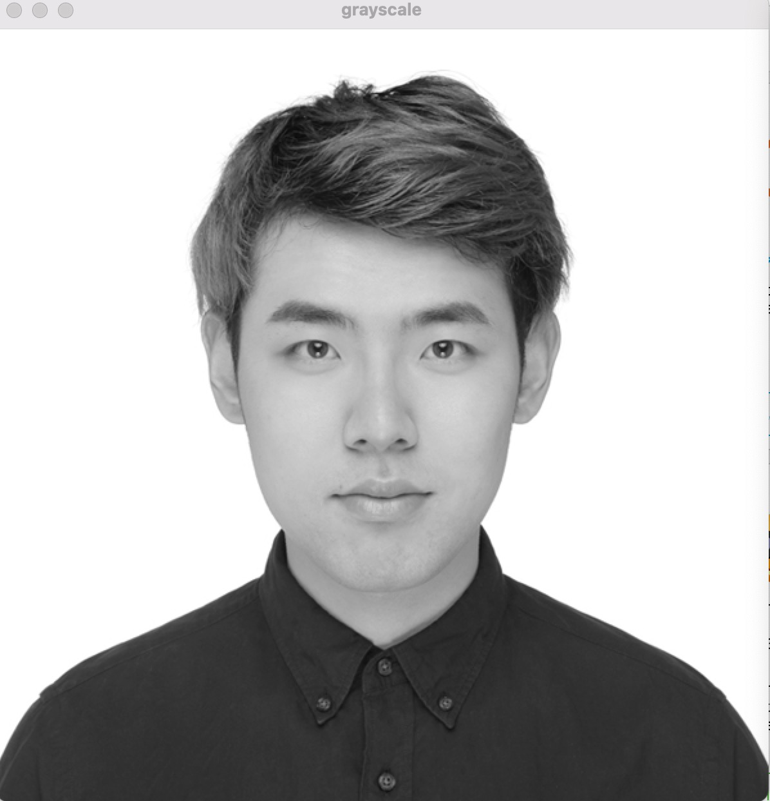

This is origin image
For this part, I define a function to get r,g,b three channels value, use these r,g,b values to compute the gray value, then replace all the RGB values with this compute value
use 3x3 block to compute average then get the blurred image